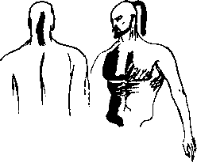

Taa İstanbul’dayken, dörtlünün üçüncüsü ve Sultan Burak asrının mûtekaid vüzerasından Siyavuş Paşa’nın oğlu Nedim Bey, dörtlünün dördüncüsü ve yine mûtekaid paşalardan eski Mısır valisi ve müteveffa Yahya Paşa’nın oğlu İskender’e, kendisini en yakın bildiği için dehşetli bir fesat haberi getirmişti. İki kafadar sabahlara kadar düşündükten sonra yeni olmasına rağmen küfür hocaları olması nedeniyle kendilerine güven telkin eden Osman’a da durumu açmışlar, Osman da halde haldeşi, sırda sırdaşı Hüsrev'e açılmış, dörtlü de zaten bu sır üzerine kurulmuştu. Haber ulemadan Süleymaniye müderrisi Hekim Numan Çelebi tarafından Siyavuş Paşa’ya uçurulmuştu.
Ayrıntı yoktu, ama bir bölük cani yeni padişahı bir gazaya tahrik edip seferde iken canına kastedecek, bunların İstanbul’daki hempaları da haber gelir gelmez hanedanda kim varsa temizleyecek ve hem kentin hem de artık memâlik-i neresi olacaksa oranın tarihinde yeni bir sayfa açacaklardı.
İki kişi uyuyamaz iken artık dört kişi uyuyamaz oldular. Durum çakılmasın diye de işi şaraba vurdular. Rollerini iyi yapmak için de kaim beyaz bacaklı Rum dilberlerinin ter ter tepinerek yaptığı ve iyi kalpli barbaların üreticiden tüketiciye aracısız satışa sunduğu şarabı, surdışı meyhanelerinden birinde karargâh kurarak tüketmeye durdular. Uzun kafa patlatmalardan sonra, yeni hiçbir bilgi gelmediği, Numan Çelebi de apar topar taşraya sürgünvari gönderildiği için ne yapacakları hususunda epeyce kararsız kaldılar. Düşman ortada yokken ne ile çarpışacaksın? Efendiyi sürgüne gönderenler bile bir ipucu değildi, bunu görünürde Şeyhülislam Mestanzade yapmıştı. Ama iş yapanda değil, yaptırandaydı. Bunu soruşturmak istemediler. O zaman karşı tarafı uyandırmış, panikletmiş ve belki de tahrik etmiş olacaklardı. Adamlar acele edebilir, seferde filan değil, doğrudan İstanbul’da yapabilirlerdi yapacaklarını. Bunu orada, sultanın ordusu içinde yapacak gücü kendisinde vehmeden burada haydi haydi yapardı. Yeniçeri kolluklarının dikkatini çekmemek için bir düzen uydurdular. En kolay ve meşru gösterilebilecek faaliyet tarikatçılıktı.
Sadece payitahtta 458 tarik, bu tariklerin de 380.000 destekleyeni vardı. Ama buradan yola çıkarak İstanbul nüfusunu hesaplamaya kalkan tarihçiler yanılmışlardır, çünkü hemen herkesin birden fazla tarikata devam ettiği yadsınamaz bir gerçekti. İşte o ayağa yatmaya karar verdiler. 459. tarik oldular. Bunlar ittifak gerektiren kararlar olduğu için dehşetli uzun ve son derece yıpratıcı konuşmalardan sonra alınabiliyordu. Böyle durumlarda Osman vaktin kıymetini hatırlatarak olayı çabuklaştırıyordu. Sonunda hem Sultan Burak’ın, hem de Sultan Berke’nin hocası olan ve Tasviri Efendi’nin iddialarına rağmen, Berke’nin sultan olduktan sonra değil, daha parmak kadar velet iken hocası olan Câmi'üs Siyaseteyn Heace Refahûddin Efendi’ye durumu açmaya karar verdiler. Bunu da Hwace’nin mektebinde tam yedi yıl okumuş öğrencilerinden olup da aralarında bulunan Osman Hulûsi Beyefendi’nin yapmasını kararlaştırdılar. Mektebin diğer iki öğrencisi olan Sultan Berke ile kız kardeşi Mehlika Sultan da bir müzakerede ciddi birer seçenek olarak Yahya Paşazade İskender tarafından öne sürülmek istendiyse de zavallı tepesine yediği yumruk ve dümsükler yüzünden susmuştu, üstelik Hüsrev, Osman’ı göstererek,
“Ulan dangalak... buncağızların ‘Etrâk-i bîidrak’ diye nâhak yere adlan çıkmış, sizin de ‘Çerkes-i nâkes’ diye... ikinize de haksızlık, Osman cin gibi, sen ise kişisin ama elinde değil, aptalsın... Sırf sidik yani kafiye bulmak zoruyla çıkarmış, ad çağırmışlar... Yoldaşlar ben buna ve taifesine bundan sonra ‘Çerkes-i nâkıs’ denmesini teklif ediyorum, kafiye ise kafiye, hem bu salağın durumuna daha iyi uyuyor...” türü zevzeklikler yapmışsa da, Hüsrev Amavud idi, iki taife çekişip dururlardı, Osman Hulûsi,
“Dur... dur bakalım, o kadar kötü fikir değil... Berke’ye değil de Mehlika’ya söylenebilir...” demişti.
Bu, haydaa, tam üç saatlik yeni bir müzakere başlatmış, İskender başta tutarlı olmak uğruna “hımm... mımm” yaptıktan sonra arkadaşlarının yanına geçmiş ve işe kadın eli bulaştırmamasını adeta ağlaya yalvara niyaz etmeye başlamıştı. Hüsrev’i illet edip biraz söyletmecesine onaya saldığı fikir ondan çıktığı için iyice sorumlu hissediyordu kendisini.
Üç saat ve üç testi şaraptan sonra o günün kararları şöyle özetlenebilirdi: 1. Etrâk kadar lakabını hakkeden başka bir millet yoktu 2. Osman Hulûsi her iki mercii ile de ayrı ayrı görüşecekti. Diğer müfsitler önemli olan ikinci kararın alınabilmesi için önemsiz gibi görünen birincinin alınmasını şart koştuğu için, Osman, “tamam ulan, kabul, salağım" demek durumunda bırakılmıştı. Arkadaşlarını Mehlika Sultan konusunda ikna eden cümlesi ise kendisine salak denmesi ile kabil-i kıyas olmaz bir şekilde incitmişti ruhunu.
“Beylerim o bir kadın değil sultandır.”
Osman, çocukluk arkadaşına hâlâ sırılsıklam âşıktı, içinden “hem de ne kadın ah! ah!" demişti. Ne hikmetse bu cümlenin “ah” nakaratını hepsi duymuş, hatta bir iki dakika onunla beraber “ah!” çekmişler, Osman ayınca,
“Bok herifler, siz görseydiniz," terbiye daha fazlasını söylemesine engel oluyordu, “şu anda tımarhanelerde, şebekhanedeki hemcinsleriniz gibi çükünüz ortada dolaşıyordunuz" diye kükremiş, çıkan ağız dalaşı yeniçeri kolluğunu, onlar da yan masada görev yapıyorlardı, üzerlerine sıçratarak az daha Tarik-i Testiyye’nin çerağını daha yanmadan sönme noktasına getirmişti. Tuhaf bir çelişki ile çerağı tutuşturan da yine aynı olaydı.
“Ne oluyor lan size?” diye yeniçeri subayı başlarına dikilmişti. İriyarı levent yapılı, koç burunlu ve korkunç denecek irilikte sarı dişleri olan bir adamdı. Diğerleri görünüşte ilgisiz, içmeye devam ediyorlardı. Açıklama gerekiyordu. Üstelik bazen yeniçerilerin büyük zabitleri de kolluğa biner, bir iki parlatmak için surdışına gelirlerdi. Tehlike göründüğünden de büyük olabilirdi. Osman atıldı, sahte ve yavaş bir sesle:
“Ağam biz Hubmesihîyyenin Testiyye kolundanız, kulp mu evveldir, lüle mi onu tartışıyoruz.”
“Hubmesihî” sözü Osman’ın tahmin ettiği gibi yeniçeriyi yumuşatmıştı. Bazıları, kavânîn-i yeniçeriyan hilafına çocuk iken değil, hemşehrilik vesaire gibi nedenler ile deve kadarken ocağa alındıkları için Mesih’e gösterilen sevgi hoşlarına gidiyordu. Osman adamın bozuk Türkisinden istidlâlen “hubmesihî” lafını ortaya atmıştı.
“Ne demek lan testiyye, ne kulpu ne lülesi? Buldunuz mu kafayı? Çektireyim mi lan sizi tomruğa?”
Durum ciddileşiyordu. Müteferrika oldukları için tomruktan kurtulmak iş değildi ama dört müteferrikanın niye tomrukta müttefikan tevkif oldukları araştırılırsa iş çıkmaza girebilirdi. Osman boynunu büküp Mekke dilencileri gibi sıraladı:
“Ağam, naçizane bizler şeyh Şihabeddin-i Sürahi’nin müritleriyiz, kendisi Bağdad’ta medfûndur, ama canlar ölesi değil, nedir sureta ölmek meğerki batında da ölmek mukadder olsun, zaten biraz önceki müzakeratta da, sizden iyi olmasın, size çok benzerdi, ruhaniyeti, aynen sizin gibi aramıza girip bizi ayırmak istemişti, tabii yine de ruhaniyet mi yoksa bedeniyet mi, muhakkak bedeniyet..."
Herif hiçbir şey anlamamıştı. Yine de hiç tanımadığı halde bir gözdağı olsun diye,
“Senin ağzın pek laf yapıyor, seni gözüm bir yerden ısırıyor, adam gibi durun!” fırçasıyla sırtını döndü.
Bir şeyhe benzetilmek gururunu okşamış olabilirdi. Belki oturak olup emekli olunca o da bir şeyh olur, böyle zengin fırlamaları söğüşlerdi... Daha masasına oturmadan İskender dayanamamış,
“Gözü ısırıyormuş, aman o kazma dişlerin ısırmasın da neyin ısırırsa ısırsın çomar oğlu çomar” demiş, buna Osman dahil herkes bir kahkaha ile karşılık vermiş, herif de işte, hem de arkadaşları ile birlikte dönmüş geliyordu. Osman,
“Ulan ne yaparsam yapın aynısını çabuk” demiş, sonraları kendisini layıkıyla meşhur eden Testi Semahı’nın atasını hemen orada yapmaya koyulmuş, bir yandan da:
Ne lüle gelir evvela ne kulp
Ne beyin gelir evvela ne kalp
Evvel olan boyundur boyun
Pirimiz Hazreti Sürahi sağ olsun
Vuruldukça büyüyecek bu boyun
Dünya durdukça oynanacak bu oyun
gibi doğaçlama ve mecburen yavan dizeler icad edip söyleyerek, dördü birden devrana başlamışlardı. Osman kuşağındaki kadife kesenin ağzını gevşettiğinden Venedik dükalarını saça saça kapıya doğru yönelmişti. Görülmeyecek, duyulmayacak gibi değildi, ama yeniçeri subayı adamlarını eliyle durdurdu. Kapıdan çıkıp gittiler. Bir beş dakika sonra geri döndüler. Kolluk kalkmış gidiyordu. Osman boynunu bükerek sordu:
“Ağam dervişlerin rızkını kaybettik, biz vecde gelmezden önce bir kahkaha patlatır, bu âlemle alay eder, dünyayı unuturuz, acaba siz bir şeyler gördünüz mü?"
Yoo, hiçbiri görmemişti. Barba görmüş müydü, yoo. O da görmemişti. Yeniçeri kendini aşan bir zariflik yaptı. Yere düşmüş bir ekmek kabuğunu alarak,
“Dediğiniz rızk bu olmasın?" dedi.
Buna da yeniçeriler pek bir güldüler.
“Naam ya ibn-i sinin kelb! Ya ibn-i şarmuta! Dervişlerin rızkıdır, budur aradığımız, sağ ol, var ol” diyerek ekmek parçasını üç kez öpüp alnına koydu Osman. Sonra yine tuhaf danslarıyla döne döne çıkıp gittiler. Tekrar geri gelmeleri, başka bir şey yapmadıklarını ispat içindi. Yeniçerinin ebeveynleri ile köpekler arasındaki bir cinsel yakınlaşmayı “ihsâs” eden ama adamların hiçbirinin anlamadığı küfürler, Osman’ın arkadaşlarının yüzünü kızartmıştı. Ulema dailerin yarısı buncağızın kanını boşuna talep ediyor değildi, değil mi?
Osman, Hwace Refahüddin Hazretleri’ne mi yoksa Mehlika Sultan’a mı önce gitsin bilemedi. Testi yaranından bu kadarına yetki almıştı. Mehlika Sultan’a gitti. Gitti demesi kolay, Osman Mehlika Sultan ile nasıl görüştü, mufassal yazılsa bir koca cilt olur da meşhur Ürküt Ata Masalları gibi okunur! Mehlika Sultan, sekiz dokuz yaşlarından beri tanıdığı, ara ara görüştüğü, kardeşi Berke’den daima haberlerini aldığı Osman’ın yanında örtünmeyi aklından bile geçirmezdi. Hem eskiden örtünmediği hem de Sultan olduğu için.
Osman, karşısındaki simsiyah saçlara ve simsiyah zeytuni gözlere aşkla baktı. Her zamanki iltifat ve takılmalar ile hiç oyalanmadan, konuya girdi. Oysa en çok “evlilik size yaraşmış sultanım, yeni kurbanımız nasıllar?” demeyi seviyordu. Çünkü en çok da bunu söylerken incitip, inciniyordu. Mehlika Sultan, babasının son saltanat yılında bir kez daha evlenmişti. Bu üçüncü idi. Damat paşayla henüz tanışmamıştı. Hoş, Mehlika Sultan ilk ikisi ile de tanışmamıştı ama sanki bu yenisiyle tanışacakmış gibi duruyorlardı.
Yeni kocası şark seraskeri Tırnakçı Utarid Zülfü Paşa, diğerlerinin aksine arslan gibi, kırk kırk beş yaşlarında olduğu söylenen bir adamdı. Sultanlarının gözüne girmek için İstanbul'a ilettiği kelle kulak sayısına bakılırsa, şark taraflarındaki canlıları bugün yarın tüketip Sultan’ın kapısına dayanması an meselesiydi Mehlika, ikinci kez müteehhil olduğu on yedi yaş sularında,
“Osman seninle buradan kaçalım, beni sevmek zorunda değilsin yeter ki gidelim, sonra da istersen şununla vur öldür beni" diyerek ufak, murassa, kıvrık hançerini göstermişti.
Osman, gururlu hatta mütekebbir denecek kadar gururlu bir delikanlıydı.
“Seni sevmemek ne demek sultanım, seni sevmeyen ölsün!” demek istese de, “evli barklı” bir kadına bunları söyleyememişti, bahusus kızın evi saray, barkı Memâlik-i Osmaniye olunca... “Hayatı” boyunca da bunun acısını çekip durmuştu.
Mehlika Sultan sakin sakin,
“Kim olabilir bunlar?” diye sordu.
Geçen günler içinde en ufak bir bilgi bile gelmemişti. Osmanlar bile kuşkuya düşmüştü. Bu işte bir bit yeniği vardı. İstanbul’un normal patırtılarında, patırtıyı yapanlar bilakis patırtı yaparak işi ayaklanmaya, kılıca-topuza dökmeden önce mesaj vermeye çalışırlardı. İşte bu anormallik bile bir bilgiydi ve kurulan fesadın boyuna poşuna iyi bir delildi. Bu yüzden Refahüddin Efendi Hwacelerine beraber gitmeye karar verdiler.
Mehlika Sultan “Hwace hazretleri hasta olsun” diye bir haber uçurdu. Hwace-i Sultani Efendi bir hafta kadar nâ-mizâc oldu. Sonra Mehlika Sultan, daha önce de iki kez yaptığı gibi hocasını ziyarete gitti. Daha doğrusu Berke gitmesini ferman etti. Mehlika Sultan pek fazla debdebe yoluna sapmadan, dört güçlü kuvvetli hadımın sırtlandığı, ikisinin de yalın kılıç koruduğu bir tahtırevanla, Hwace Efendi’nin hemen Divanyolu üzerinde Çemberlitaş’taki konağına gitti. Osman yoktu. Osman olmadan ne anlatacaktı?
“Bir fesat varmış Hwace Efendi Hazretleri," dedi ve sustu.
Sonra Topkapı’dan bir haber uçtu ki, Mehlika Sultan gece Hwace’de kalsın.
Canı o akşam içmek istediği için Berke Osman’ı saraya çağırmıştı. Yanında da Osman'ın o zamana kadar görmediği, yeşil gözlü, çelimsiz bir musâhib vardı. Berke gitmiş, yine kendine tuhaf bir arkadaş bulmuştu. “Ulan Berke padişah oldun, zerre kadar akıllanmadın, sınıfın hiç olmaz ise en zeki üçüncü talebesiydin, bu gidişle tevârih-i âl-i Osman’a en dangalak sultan olarak geçeceksin, acaba mülkün selameti için şu fesadın önünü kesmesek mi, kah...kah...kah...” diye düşündü Osman.
Arkadaşını canından çok seviyordu, mülke de ne olacak bilemiyordu. “Şu bastıbacaktan hazzetmedim. Dur hele...” dedi. Kırmızı mumla mühürlü iki kişilik bir sinide yemek geldi. Ilaçan’dan beri yerleşen teamülün aksine beraber yediler, musâhib ise çok saygılı bir mesafede değilse de alesta durarak birtakım hoşluklar, yavegûluklar ediyor, şehirden, taşradan, Avrupa saraylarından dedikodular ve haberler aktarıyordu:
“Sultanım, işittiniz mi? Rim Papa dedikleri kâfir aslında avratmış, Kanter Böri piskoposundan bir veled-i zinâ peydahlayınca fâş olmuş... kih...kih...”
Elhak herif dilli bebek gibiydi. “Ah Berke ah, sultan olmayacaktın, seni barbalardan birine bir gece götürecektim ki o zaman şu sakallı kurbağa kılıklı, siğilli püzevengi geldiği dereye gerisin geri azat etmiyor muydun bakalım...”
Yemek bitmişti, herif şimdi de güya daha tuhaf şeyler anlatıyordu. Ara ara dedikleri kulağına çalınsa da Osman onu pek dinlemiyordu, sonra adamın tuhaflık diye Testiyye tarikatını anlattığını fark edince can kulağıyla dinlemeye başladı. Adam bire bin katarak anlatıyor, ehl-i tarikin nasıl testi kılığına girip semah ettiklerini söylüyor, sultanı güldürüyordu. Sonra da kalkıp biraz para saçarak ve acayip bir testi kılığına girip semah ederek, zengin Testiyye müritlerinin devranda paralarını nasıl döküp saçtıklarını gösterdi... Sultan Berke musahibine laf attı:
“Bre bu ne biçim semah, bu ne biçim testi?”
Adam bütün gece bu ana hazırlanmıştı besbelli:
“Şeker Hami kulunuzdan bu kadar sultanım, hiç bu bedenden testi olur mu? Olsa olsa kenef ibriği olur..."
Sultan Berke, hıçkırıncaya, katılıncaya kadar güldü. Osman Hulûsi, adamın halinden işkillenmişti, ne olur ne olmaz, o da katılıncaya kadar güldü:
“Sultanım... Hah... haah... hah... Allah devlet ve ikbalinizi tezyîd eylesin... Ben de bu musahibin nesini beğeniyor âlempenah diyordum... hah... hah... hah... Ay ne maskara şey bu böyle! Nereden buldunuz bunu? İlahi! Hah... hah...”
“Senin de seveceğini biliyordum Osman... Hah...hooh...haoh... Bizim Damat Utarid gönderdi sağolsun... Hih... hih...”
Osman kurbağanın suratında bir karmaşanın dalgalanıp söndüğünü gördü. Çok önemli olabilirdi bu...
“Sultanım başka ne marifetleri var? Emretseniz de temâşâ etsek... Ah, sultanım sağ olsun... Aylardır böyle gülmemiştim... Nemçe ordusuna bir başına bunu gönderin... Yeter de artar! Hoh... hoh... Dersaadet de böylece zât-ı şeriflerinizden iftirak etmemiş olur.”
Kurbağa bu sefer zokayı yutmuştu, acele acele,
“Osman Hulûsi Beyefendi kulunuz ne hoş söyler sultanım... Siz yeter ki emredin, tüm İstanbul sizinle sefere çıksın, böylece padişahlarından da ayrı düşmemiş olurlar..."
“Osman... Cevabın zarâfetine bak Osman! Bu ne hazırcevaplık? Aferin Şeker kulum mahzûz oldum..."
Berke kuşağından bir kese çıkararak fırlatmış, eliyle de, çıkabilirsin diyerek adamı savmıştı. Şeker Hami çıkınca padişahın yüzündeki ifadenin aniden gerildiğini gördü Osman. Padişah da kendisi gibi rol yapıyordu. Berke eliyle sus işareti yaptı. Sonra göğsünde sakladığı bir kâğıt parçasına, bir türlü düzeltemediği kargacık burgacık yazısıyla “Hwace’de bekle!” yazarak kâğıdı verdi. Şimdi Osman’ın elinde resmen bir hatt-ı hümâyûn vardı. Temennalar ederek çıktı. O çıkarken kızlarağası Hafız Bilal Ağa huzura girdi.
Osman Divanyolu’na doğru, koşarak, adeta uçarak gitti. Hwace-i Sultani’nin adamları tarafından hemen avluya alındı. Koşarak Refahüddin Efendi’nin selamlıktaki odasına girdi. Mehlika Sultan başına ufak bir sarık sarmış, erkek “donuna" girmişti. Osman için pek şaşırtıcı oldu bu.
Bir saat kadar sonra Berke de tebdil ve tek başına geldi. Garip bir geceydi.
“Atlattım kerataları” demişti gururla.
Gövde ve sima olarak kendisine pek benzeyen Telli Haseki’yi “tebdil” suretine koyup ama yanına Bostancı Başı’nı ve birkaç dilsizi de katıp kayıkla Boğaziçi’ne göndermişti, saraydan çıkışını kollayan “düşmanları” bu kadarını beklemedikleri, yani gece denize imlemeyeceğini düşündükleri için herhalde apışıp kalmışlardı. Berke yaptığından pek bir gururluydu.
Osman Hulûsi ise sevinçten havalara uçuyor, Berke’nin mektepteki performansını şimdi bambaşka şekillerde hatırlıyor, hatta şehzadenin eğri büğrü yazısını bile düşmanlarına stratejisini belli etmemek için, hatta hatta, sırf şu geceyi, o günlerden hazırlayabilmek için bir dolap, bir numara olarak görüyordu, sınıfın en zekisi Berke, hepsini suya götürmüş, susuz getirmişti işte ve yıllardır bu anı planlıyordu! İki eski dost, yalnız olmamalarına rağmen Hwace-Bacı ve Hwace-Gizli Aşk kategorisindeki iki sevgili insanlarına aldırmadan, birbirlerinin kollarına atılmış, hasretle, yıllardır birbirlerini görmemişler gibi kucaklaşmışlardı.
Berke’nin 135 bu kadar kilosu Osman’ın demir leblebi 70 okkasını ezememiş ve 1,76 normal adam boyunu devirememişti. Osman inşirahlara gark olmuş,
“Arslanım, koçum, biz de zannediyorduk ki ‘yareli şîr-i jiy uyuyor, ‘etrafı avlamaya muktedir bunca şirpençesi varken kulağını burnunu kemiren sıçanları yesin’ diye kedi zuhuruna muntazır bulunuyor, şevketlüm benim...”
Hıçkırıklar içinde ağlıyordu. Mehlika Sultan ve Hwace Efendi de öyle.
“Hele hele... Bilmez misiniz sınıfın en külyutmazı olduğumu... Ne gam çeker, gussa yirsiniz a şaşkınlar... Tabii ki duruma uyandı arslanınız, yarından tizi yok, o karpuz kılıklı Testici püzevenklerini kızıl çamura kızıl kanları ile beraber karacağım... hele... hele..."
Berke’nin dağlar gibi gövdesinden çıkan ayı pençelerinin deviremediği Osman Hulûsi Beyefendi’nin, çelik boğumlardan oluşmuş midesine inen bu katır tekmesi, onu öyle bir sendeletti ki, dökülen ilk testici kanı kendisininki zannetti. Karın zan yırtılmış mı, kan sızıyor mu diye elini gayr-i ihtiyâri kamında şöyle bir dolaştırdı. Hiçbirinin gözünden kaçmamıştı. Herkes bunu kendine göre yorumladı. Berke,
“Baka Osman’ım sendeledin, Berke’nin gözünden kaçmaz, Berke asla kül yutmaz, ‘padişah Berke, sultan Berke, sende yok mu hiç merhamet, biraz bekle’ dime! Umûr-u devlette merhamet olmaz... Beklemek olmaz... Bu pilav artık su kaldırmaz... Senin müteferrika bölüğün de bulaşmış... İçim kan ağlar ama arkadaşlık, musâhiblik başka bu başkadır, adaletin gözü kördür, baka Osman’ım!” dedi. Olan olmuştu.
Osman Hulûsi, Berke’nin hediyesi olan eğri acemkâri kılıcını çıkarıp Berke’yi ikiye biçmek istedi. Durdu. Acaba Hwace Efendi ve Mehlika’yla birlikte bu sınıfın, bu evrenin, bu iç ve dış uzay... uz... neyse, ezeli ve ebedi en geri zekâlısı kalmasına Cenâb-ı Hakkın daha kalûbelâda karar verip, Levh-i Mahfûz’a öyle hak ettirdiği Öküz Sultan Berke’yi, konuşarak ikna edebilir miyiz diye düşündü.
“Arslanıma eğer dadıları yıkamazsa kıçları boklu dolaşan müteferrikalar değil, cihan kurban olsun, hepimizin kara başı kesilsin, al kanımız kara yire saçılsın," dedi umarsızca.
“Hele hele, senin ve üç yoldaşının ne ittiğünden haberim vardur... Benim sözüm ve kasdım geri kalan hain-i devlet ve din olan ol nankörleredir… Hele hele...”
Osman Hulûsi bu sefer katır tepmesi değil de bir ufak er çimdiği yedi. “Tuh, Allah seni bildiği gibi etsin, bunu da sıçıp sıvamışsın ey Berke!" Biraz soluklandı. Susmaya karar verdi. Berke’nin dedelerinden Sultan Zemberek’in Acem’den gelen nedimi Feridun Bazincan’ın oğlu olan altmışlık Hwace Refahüddin Efendi ağır ağır, billuri bir sesle konuştu, insanın içine huzur meltemleri doluyordu:
“Şevketlüm, acele itmen, hemen yarın harekete geçmen, ola ki bu mendeburların yüksek mahâfilde dahi bazı ayakdaşları vardır, katı tahkik eylen, andan sonra hepisini birden Şeriatın kahhâr kılıcından geçirmek, tume-i şimşirden gûzar etmek işten değildir. Biraz teennî buyurun. Ben kulun ile Hami Efendi oğluma, Utarid Paşa kaplanıma biraz vakit ihsan eylen, kitabımızı bulalım, bakalım, kim suçludur kim değil ‘okuyalım,’ korkarım ki siz tiz gönüllülük edesiz, bunların hempaları müteharrik olalar, dâiye-i fâsidelerini bir an akdem kuvveden fiile çıkarmağa mecbur kalalar.”
Osman, Hwace’nin bu fesada bir şekilde müdahil olduğunu anlar gibi oldu. Berke başını iki yana salladı:
“Yok, Hwacem yok... Artık tahammülfersâ oldu, günlerdir bir bu gün yimek yidim, o da eksik olmasın Osman atılıp benden önce tattı da öyle!”
Osman, muhayyel muhayyilin bu inşa edilen satırlar belki bir gün âlem içre fâş olur diyerek kendisini dizginlemesiyle, Berke’nin o işvebaz anasının birtakım nevahîsine ve Hwace Refahüddin’in hem yaşı hem de cinsel... o ne lan... neyse, yönelimleri hakkındaki yorumlarını kendine sakladı. Sonra da hazan yaprağı gibi titremeye başladı: Mehlika Sultan acaba bu kocamış kösnüğe ne anlatmıştı? Adını bile vermiş olsa yeterdi. Kızın gözlerine baktı. Kız simsiyah kömür gözleriyle, mektep günlerindeki şifreyi kullanarak, yani sağ ve sol gözkapaklarını belirli bir sıra ile açıp kapatarak, “Hwace asla kül yutmaz” mesajı verdi. Biraz daha rahatlamıştı.
Hwace de öyle: Daha dersler sırasında bu göz haberleşmesini keşfetmiş, bir gün de şifreyi çözmüş –gözler kalbin aynasıdır, çabuk çözülür onlar– gençlerin bu şifre ile birbirlerine “aşkım”, “ruhum”, “Berke aptal”, “Hwace cin gibi” türünden mesajlar gönderdiklerini görmüş ve hem aralarındaki aşkı tasvip etmiş hem de Berke konusunda aynısını düşündüğü, hatta bir gün derste “ey benim dana sultanım” diye kızarak bu isim babalığını kendisi yaptığı için ve tabii hepsinin ötesinde, gençler tarafından beğenilmek kaygısından dolayı, bu göstermelik şifreyi yemişti. Mehlika Sultan ikinci ve ne olur ne olmaz diye üçüncü şifrelerle önce “her şeyi” sonra düzelterek “hiç” mesajını verdi. Osman Hulûsi daha da rahatlamıştı. Hwace’nin nurani sesiyle kendilerine geldiler:
“Evlatlarım, ya siz nereden duydunuz?"
“Önce ben” diye atıldı Mehlika, “sultanlar önden” diye fettanca ekledi. Osman’ı kızdırmak için, mektepten kalma bir havada.
Hwace içinden, “ah...ah...” dedi, “yeni bir şey yok bu âlemde.”
“Bana Testici melunlarının hanelerine girip çıkan bohçacı kadınlar getirdi haberi."
Osman’ın müteferrika olmak hasebiyle başka yerden duyduğunu söylemesi hem şüphe çeker hem de bir şeye yaramazdı. Müteferrika bölüğünden, yalnızca gerçek “mûfsitler” olan kendilerinin kurtulmasına ve o masumların şehadetine zaten karar verilmişti. Ayrıca “başka yerden duydum" deyip ibadullahın canını yakmak da olmazdı. Sesi hiç titremeden,
“Hwacem sen bilirsin, sultanım da bilir, ol bölükten biz dört sadık kullarınız hariç hepsi hain olmuşlardır” deyip boynunu büktü. Peşinden gelecek soruyu biliyordu, hazırdı. Onu da Berke sordu:
“Baka Osman’ım bu güne değin ne söylemezsiz?"
“Sultanım, Osman kulun bilir, diğer üçü bilmez, geçen hafta Sarı Hamza köpeği –en sevdiği arkadaşlardan biriydi– meseleyi bana fâşetti, tehdit etti, ‘Bir siz dördünüz kaldınız, ayağınızı denk alın’ dedi..."
“Vay it! Ekmeğim haram olsun...”
“Amin! İşte o it havlayınca aldım haberi, sonra Mehlika Sultan Hazretleri’ne haber uçurdum, Hwacemizde buluşalım, onu da alalım sultanımıza koşalım dedim...”
Hwace bu kadarından meseleyi çözmüştü. Ama Berke devam ettirdi:
“Eee, sonra?"
“Sonrası, siz kulunuza emr ittiniz, saraya dahil oldum."
“Orada niye demedin?"
“Sultanım, o Hami kulunuzu tanımaz idim, itimat edemedim, sonra da siz buraya gelmemi ferman buyurdunuz, hiç konuşamadık bile” diyerek göğsünden fermanı çıkardı,
“Mübarek hatt-ı şerifiniz ile müzeyyen nameniz hâlâ durur sultanım."
Berke kızkardeşinin önünde biraz utanmıştı:
“Tamam tamam, Osman’ım... Bunları geç, bunlar malum... Biz de hwacemizin casusları sayesinde tahkik bildik Mehlika’ya haber verdiğin. Biz de boş durmadık yani, bacımıza haber uçurduk, ‘hwacemizde kal, gitme’ diye... Şeker Hami kulumdan emin ol artık Osman... Kendisi aslında meslekten musâhib değil, sahaftır. Tasvir-i Duvduvani kitabını bizim için aramaktadır... Sağ olasın, var olasın, iki cihanda yüzün ak ola Osman, hizmetse ancak bu kadar olur, hele... hele...”
Osman Hulûsi, biraz konuyu dağıtmak için biraz da, bazen sultana rağmen sultana sadık olabilecek kadar merd-i musâhib olduğu tescil olunsun diye patladı, patlar gibi yaptı:
“Berke, mülk elden gidecek, sen Duvduvani Ata Masalları peşindesin, koyun can derdinde kasap yağ...”
Sonra da kendine gelmiş gibi yaparak,
“Şevketlüm... meded... Bağışla kulunu” diye kendini yere fırlatıp Berke’nin önünde dokuz defa yer öptü. Berke arkadaşını kaldırırken gülüyordu:
“Sınıfımızın yüzkarası cahil Osman’ım, o dediğin Duvduvani Ata değil, Dede Ürküt masalları... değil mi Hwacem?"
“Şey, evet hünkârım... Bizimki, Tasavvuri Efendi’nin telif eylediği bir hûb kitap imiş, fakir dahi henüz görmedim amma istediğini ‘okur’, ‘ol’ dedirir oldurur, ‘öl’ dedirir öldürür imişsin... Hami oğlumuz izini sürüyor, Nemçe elinde, Beç kalasında imiş... Ama lisan-ı Türki bilmediğinden okuyamaz imiş küffar donguzu... Sırf bu yüzden oryantalişe gemeyinşaft mıdır ne karın ağrısıdır, bir dârülhadîs ihdâs etmiş ve maalesef bazı uğru din taşıyan hubmesihîler gerüye kaçıp üzerinde çalışmaya başlamışlarmış... İvsek gerektir sultanım, gidelim Nemçe’ye Nemçe’ye… Küffar kitabı çözmeden Beç’i dûşürsek derim..."
“Tamam Hwacem sırayla... Yarın buradaki Testicilerin çanına ot tıkama demi, sırayla a canım, akçeyle değil a? Bu Rûz-ı Hızırda gideriz... Osman, sen bacımızı al, kendi hanesine götür, Mehlika sen de feraceni bana ver, senin tahtırevan ile saraya döneyim, siz benim atımı alın, soran olursa ‘Mehlika Sultan’a sultandan ferman var’ dersiniz, elverir... Hwacem sana da Allah rahatlık versin... Yarın Devlet-i Âliyemizin yeniden kuruluş günüdür, belki de ilerde müverrihan ‘Berkelü’ diye ad çağırırlar... Gün ola, hayır ola...”
Sultanın sözleri üzerine herkes dağıldı. Gece yarısı ancak olmuştu.
Mehlika, Hwace’nin ahırından çıkma sütbeyaz bir kısrağın, Osman, Sultan’ın o pek meşhur, Kalmuk Elçisi adlı kestane kın aygırının üstünde, dörtnala Mehlika Sultan’ın hanesine, yani Abram Paşa Sarayı’na gittiler. Atın çekik gözleri geçenlerde İstanbul'a gelen, İsen Taycı adlı Kalmuk elçisinin gözlerine benziyordu.
Birkaç dakika boyunca Divanyolu şimşeklerden çalınma nal sesleri ile çınladı. Mehlika Sultan, atlar bağlanırken Osman'ı elinden tutarak üst kata çıkardı. Gün olur muydu bilmiyorlardı, ama hayırlı olmayacağını biliyorlardı. Doğruca Mehlika’nın odasına gittiler, kapıda yalın kılıç Kanemli hadımlar nöbet tuttu. Mehlika Sultan, Osman’ına sarıldı, önce doyasıya ağladı, sonra
“Gururu bırak Osman’ım, ben kimsenin malı değilim, mülkümüzü ele geçirip, atalarımın ocağını kurutmaya azmetmiş bir caninin hiç değilim, işte Cenâb-ı Hak huzurunda ve senin önünde o mülevves pisliği boşuyorum," dedi.
O gece beraber oldular. Tutkulu sevişmelerin arasında daha da tutkulu konuşmalar yaptılar, geleceği kestirmeye çalıştılar. Yapacak hiçbir şey yoktu. Sevgili ve ağzı bozuk müteferrikaları aklına geldikçe gözlerinden sicim gibi yaşlar inen Osman’ı ile beraber ağladı Sultan:
“Cenâb-ı Hak, müteferrikaları hakikaten de tefrik etmiş, dördünü bırakarak gerisini kendi ulu sarayına almaya karar vermiş…”
“Sultanım, Osman Müteferrikan zaten hep günahları, küfrü sayesinde yırttı şimdiye kadar, bu da öyle bir halet işte..."
Gün doğdu, hayırlar olmadı. Tan yeri karanlık ve vahim bir rahim-i bî-rahm gibi, kızıl kanlara bulanmış bir yavru irisi güneş doğurarak, iki imparatorluk gömmüş ve belki, “fesad”ın önü kestirilmezse bir üçüncüsünü de gömmek üzere olan “Dersaadet”in yeni zaferini kutluyordu. Tabii ki uyumadılar, Osman sabah erkenden dışarı çıktığında Divanyolu’nun her iki yanındaki dehşeti gören gözlerine lanet etti.
İnsanın insana yaptığını görmenin, cezayı çekenlere verilenden kat kat ağır bir ceza oluşunun lüzumsuz bir şahidi daha oldu. Hem bu kaderin en büyük mimarlarından birisi oluşuna şaştı hem de en bilinçsiz tuğlası kadar önemsiz oluşuna... Tahmin ettiği gibi, müteferrikalarına olan olmuştu. Divanyolu’nun her iki yanına kurulan darağaçlarında saz bedenler, çelik göğüsler, İstanbul güneşiyle yanmış ve eski şakrak yazların müşahidi yarım bakır kollar –müteferrika üniformasının bir hususiyeti– sarı bıyıklar, kızıl bıyıklar, siyah sakallar, henüz tam çıkmamış sakallar...
Devlet-i Âliye-i Osmaniye, tüm diğer düvel-i ulyâ gibi bir kez daha gençlerini, evlatlarını, o devlet-i âliyenin hissedarı olan babalarının bebek iken saçlarını koklamaya doyamadıkları çocuklarını, dökülen o kanı asla istemeyen Baal’e kurban etmişti.
Osman saraya doğru, sultanın muhteşem koşumlu atının üzerinde Divanyolu’nun her iki yanına bir tür selam vere vere, yoldaşlarını gözleri ile öpe koklaya, ağır ağır ilerledi. Tüm halkı ölmüş bir ecel padişahı gibiydi. Baal’in tapınağında selamlık resmine çıkmıştı. Bir ecel padişahına yakışan yemin ne ise onu etti:
“Bindiğim at, kuşandığım kılıç hakkı için benim sizinle davam kıyamete değindir.”
Halk manasız gözlerle bu manzaraya bakıyor, Osman’ın o heybet ile geçtiğini fark eden birtakım işgüzarlar koşturarak maslûb bedenlerin üzerine tükürüyor, ellerini göklere kaldırarak dirlik ve düzenliği sağlayan sultana tükenmez ömürler istiyorlardı.
Bir ara başını çevirip arkaya baktığında, bu manzaranın yolun kıvrıldığı, gözden kaybolduğu noktaya kadar gittiğini anladı. Bu kadar müteferrika yoktu ki! Felaketin daha da büyük olduğunu idrak ederek, sol yanında Ayasofya, sarayın birinci kapısına geldi. Daha birinci avluda binlerce yalın kılıç yeniçeri muhafız olmuş, Yecüc ve Mecüc benî Âdem’e zarar vermesin diye tunçtan bir sed örmüş, ayaklarını iki yana açmış bekliyordu. Osman Hulûsi “acaba neyi koruyorlar?" diye düşündü, içerideki kanlı canavar dışarı uğrayıp biraz daha kan içmesin diye mi sed örmüşlerdi, yoksa dışarıdaki ölü ve canlı halayık saraya hücum etmesin diye sarayı mı koruyorlardı? Yecüc Mecüc neredeydi? Seddin o yanında mı? Bu yanında mı? Pek emin değildi artık. Şaka olarak düşündüğü “şu fesadın önünü kesdirmesek daha mı iyi” faslı, artık pek o kadar şaka değildi ve Osman Hulûsi pek yakında bu yabani soruyla pençeleşmek zorunda olduğunu biliyordu. O zavallı müteferrikaların pek süslü, yakaları beyaz kakım kürkle kaplı kışlık kılığından ötürü kendisine anında kılıç üşürmeleri gerekirken, yeniçerilerin, saygıyla iki yana yarılarak yol açtıklarını gördü. Herhalde tembihli idiler. Sultan’ın atının, yani murassa takımlar donanmış ve gümüş eyer altındaki derisi ışıl ışıl parlayan Kalmuk Elçisi’nin üstünde bulunması, Osman’ın gayr-i ihtiyârî kabzasını sıkı sıkıya kavradığı murassa kılıcın da sultanın eski bir hediyesi olması, ecel padişahı imgeleminin devam etmesini sağlıyor, sanki bu birlik onun için oradaymış görüntüsü veriyordu. Kan ve taze ceset kokusu aldığı için ürken, şaha kalkan, sağ ön ayağı ile toprağı eşen, hal-i tevahhuşta ve iyi eğitilmiş her Osmanlı atı gibi koşmak, saldırmak, düşmanın atlarını ısırmak isteyen Kalmuk Elçisi’nin sırtındaki sakin ve umursamaz hali, bu etkiyi iyice artırıyordu. Heykel gibi duran bazı yeniçerilerin gözlerinden yaşlar iniyordu. Şaşırdı.
İkinci kapının önünde ise dağlar gibi heybetli iki yeniçeri, palalarının kıvrık uçlarını küt taraflarından sanki birer bebek gibi omuzlarına yatırmış, iki taş sütun misali duruyorlardı. Birini tanıdı.
“Çomar Kolbaşı!”
Adam “duur" diyerek atın dizginine yapıştı. Uzaktan gören için her şey gayet normaldi. Buradan öte atla gidilmezdi, ancak sultanın atı geçerdi. Gerçi Kalmuk Elçisi sultanın en sevdiği atıydı fakat üstündekinin de sultan olması gerekiyordu. Ya da, bir Asya-ı Vustâ inanışına göre kazara geçenin de sultan olması gerekiyordu.
Kibarca “buyurun beyim” dedi yeniçeri subayı; tane tane konuşmaya gayret ederek. Türkçesi anlaşılsın istiyordu:
“Yiğit Osman Beyim, istersen buradan at üzerinde de geçersin... Senin elinde... İste yeter!”
Daha oynak ruhlara, mesela bir Şeker Hami’ye zil taktırıp atın üzerinde tavşan oyunu oynatacak olan bu lafa Osman hiç şaşırmadı, zaten o günden sonra bir daha gerçekten hiç şaşırmayacaktı. Daha kuşkulu ruhlara ise “aman o nasıl söz öyle” dedirterek bir tuzak karşısında olup olmadıklarını anlamaya sevk edecek bu hale o tepkiyi vermeyi de küçüklük addetti. Sessiz kaldı. “Çomar Kolbaşı” devam etti:
“Beyim kul sizinledir, tek bir emrinle geri döner, bu bokluğun tek taşını bırakmaz, sabaha ise o taşlardan sana istediğin sarayı yeniden inşa ederler...”
Osman hiç tereddüt etmedi, o artık kararını vermişti, mal ile “mülk” ile kendi zati hevesleri için oyalanmayacaktı.
“Biliyorum ağam. Sağ olun ama mülk tehlikededir... Bunda tefrika olmaz... Berke’den ve hanedanından henüz umudumu kesmiş değilim... Haber bekleyin... Yakında olan olsa gerekdir. Sana bir remizim vardır, ancak benim öz ağzımdan kendi kulağınla duymadıkça harekete geçmeyin. Duyunca da önünüze paşa babam çıksa ikiye biçin."
Sonra eğilerek yavaş yavaş saltanat atından inmeye koyuldu ve adamın kulağına bir hizb fısıldadı. Çomar Kolbaşı, aslında Ocağın büyük zabitlerinden “serseksoni," yani o dört ayaklı gerçek çomarların yüz akı olan ve nice gazaya katılan geniş göğüslü köpekleri besleyen askerlerin komutanı olan seksoncubaşı, adı ile değil de lakabı ile müsemma, yüreği kunt, yiğitlerin hası Bekri Ağa, gözlerinden ip gibi değil, sağanak gibi yaşlar akıtıyordu. Yeniçerilerin daha çok bir uğur gibi yanlarında taşıdıkları ve o ana kadar sağ kulenin dibindeki çakırdaklı koyun postunun üzerinde uyuyormuş gibi görünen, ufak tefek ve uzun dağınık sakallı bir Bektaşi babası, yaşlı gözlerini semaya kaldırarak hiç umulmayan ve avludaki 12.000 yoldaşın her birinin kulakları içinde gümleyen bir sesle, kıyamet gününü haber veren sûr gibi gümledi:
“Yar için serini vermeye koşan, bu âlemin tantanasını fisebilullah elinin tersi ile iten, demi geldiğinde sel gibi coşan, âdemoğlu Osman Bey aşkına bir huu!”
11.999 yoldaşın, değil sarayın içinden, deryadaki gemilerden bile işitilen sesi, o gün birtakım kara yüreklere kuşkular, korkular saldı.
“Sultanım” dedi Şeker Hami,
“Bu kul taifesine de ne oluyor? Sizin mahz-ı isabet ve keramet olan kararınızı mı sorguluyorlar? Bunları sizin ceddiniz kul etmedi mi? İsterseniz topunu bir pula Mısır esircilerine satarsınız, Nubya taraflarında beyaz âdem etine düşkün bir acayib taife varmış, yani her iki türlü... kah... kah...”
Berke’nin gülecek hali yoktu. “Hami! yıkıl git bre kurbağa kıyafetli püzeveng, şimdi derine saman doldurtma hazır elim değmişken...” diye gürledi.
Hami arsız arsız çıkarken “ay...ay... imdat...” diye yalancıktan korkular geçirerek mübtezel, yıkıldı gitti.
Osman Hulûsi’yi bekletmeden içeri aldılar.
“Osman, kul ne ister?” diye bağırdı Berke.
“Mülkün sultanları ile beraber dirliğini, mutluluğunu sultanım. Ne isteyecekler?”
“Yani akçe, ulufe davası itmezler, kelle istemezler."
“Yok Berke, istemezler.”
Berke, Osman Hulûsi’nin sert konuşmasından, çok üzgün olduğunu anladı:
“Osman, taa şurası yanıyor.. Hiç mûteferrikalarıma kıyar mıydım? Sebeb olanların bu cihanda cezasını ben verdim, öbüründe de oranın padişahı ilahi ateşinden azat etmesin, amin!”
Osman usulden olan amini bile söylemeden sordu:
“Sebep olanlar mı?"
“Tabii Osman... Yahu biraz akıllı olsan a! Dört beş müteferrika hiç kendi başlarına böyle azim fesada kalkışabilir mi? O Testici tarikatının şeyhini müridleriyle beraber kazığa vurdurdum, onları aleyhime sevk eden Sabit Niyazi Paşa’nın da derisine saman doldurttum, yaaa! Bizim bacı nasıl? Korkmadı ya?”
“İyidir, ben sabah çıktığımda iyiydi, bilirsin korkmaz, senden benden cesurdur!” dedi kısaca Osman.
Berke, gerisini sormadı. Osman’ın sabah Abram Paşa’dan çıktığını saraya hemen yetiştirmişlerdi.
“Kalk divan var, bakalım bizim esir pazarında ne konuşuluyor?”
Divan azalarının hemen hepsi kul cinsi olduğu için sultanlar bazen böyle eğlenirlerdi. Tatsız, gözlendiklerini bildikleri için huzursuz, birkaçı yeğen, birisi bir torun kurban vermiş, çok sevdikleri ve taa içoğlanlık günlerinden arkadaşları olan merd-i merdan Sabit Niyazi Paşa’nın Hwace-i Sultaninin hışmına uğramasından tedirgin vüzeranın ağızlarından berber kerpeteni ile güç bela laf alınabiliyordu. Sadrazamın hiçbir şey anlamaksızın mecalsiz mecalsiz okuduğu, bent bent kaleme alınmış bir metne hiç müzakere etmeden “beli beli” diyerek kafalarını salladılar.
Osmanlı tarihine sonradan Haç-Hilal Ovası adıyla geçen meşhur seferin kararı, işte böyle bir havada alındı. Sadrazam Ercümend Paşa “kifayet-i müzakere” dedi. Hasan Çavuşbaşı’nı çağırarak yüksek sesle,
“Kul çorbasını içti mi?” diye sordu.
Bu sorunun cevabını Berke de bekliyordu, içmişlerse Osman’ın yaşamasına izin verecek; işte, “efendim yok tuzlu olmuş, yok içinden bulaşık bezi çıktı” gibi sudan bir gerekçe ile içmeyip de sultanın ekmeğini yemekte epey zorlandıkları, ekmeğini yemedikleri sahibin kapısında kul da olmadıkları mesajını vermeye kalkışırlarsa, çocukluk arkadaşını hemen yay kirişi ile boğduracaktı. Bunun başka çıkarı yoktu. Çorba içmemenin bir adım ötesi, o çorbayı pişiren kazanı kaldırmaktı ki estaizubillah... Sabah bu işi çok düşünmüş, kendi kendine “umûr-u devlet, umûr-u devlet” diye mırıldanmıştı. Çavuşbaşından gür bir cevap geldi;
“Tanrımıza hamdolsun, içmişlerdir!”
“Ya o gulgule, şamata nedir?”
“Gulgule değildir, tek nefes gülbanktır, padişahın mülkü ebed müddet olsun, bu uğurda hizmet eden Osman Hulûsi Beyefendi gibi yiğitler daima sağ olsun makamında bülend avaz eylemişlerdir ..."
Seksen yaşlarında ama tomruk gibi kol ve bacaklarında bir aslanı bile boğacak kadar güç olan bu eski yeniçeri, “Kul kazanı devirmiş” ne kelime, “kul kazanı lazımlık olarak kullanıyor” dese bile daha iyiydi.
Yerin yarılmasına filan gerek yoktu. Bütün vüzera kaçacak sıçan deliğine bile razıydı. Çavuşbaşı ise, yaşlı ve titrek sadrazamın kaş göz işaretlerine, herhalde “yine tiki tuttu bunun" diye kulak bile asmamıştı.
Padişah biraz önce boğdurmayı düşündüğü adamın zannettiğinden çok daha güçlü olduğunu anlamıştı. Yine de, eğer Osman Hulûsi istemiş olsa şimdi ne olurdu kısmını tahmin değil, tahayyül bile edemezdi. Böyle güçlü adamları hoş tutmakta, kendisine medyun, nimetlere gark olmuş bir halde bırakmakta fayda vardı:
“Bre Osman gel seni yeniçeri ağası yapalım. Kul seni pek sevmiş!”
“Sultanım sefer vaktidir. Muktedir başbuğlar gerekdir, senin Osman’ın yapacağı iş midir? Seksoncubaşı kulunuzu bu sabah askeri zapt ederken görmeliydin, ‘mülk’ için bir hayırlı iş yapacaksan onu nasb ve tayin et!" deyip çok çok sonraları şeyh olduğu zamanlardaki gibi bir tevazu ile boyun kesti Osman.
“Osman, yaptım gitti! Git, ferman eline ulaşmadan kendin müjdele. Şimdi bu bokluktaki yılan çıyan takımı koşturup ‘seni ben tayin ettirdim’ diye herifi minnet altında bırakmasın. Bir minnet altında kalacaksa bu seninki olsun!”
Berke durdu, Osman’ın da kendi minneti altında bulunmasına karar verdi:
“Osman, Kalmuk Elçisi’ni takımları ile beraber tut. Üstüne çok yakışmışsın diyorlar!”
Osman Hulûsi geldiğinden daha iyi bir halet-i ruhiye ile saraydan ayrıldı. Gücün yanında yöresinde dolaşmanın böyle faydaları da oluyordu, yeter ki kendi şahsını işe sokmamayı becerebilsin. Müteferrika kardeşlerinin ve daha kim bilir ne kadar insanın kanını yerde bırakmakla, intikam hissine kapılmamakla, Berke’nin sarayını başına yıkmamakla iyi etmişti. Bunlar da yeni kurbanlar yutacaktı çünkü.
Dışarı çıktı, Kalmuk Elçisi’nin zaten orada tutulduğunu gördü! Kulun canı bugün başka şekilde mesaj vermek istemişti. Gülümsedi. Binek taşına çıkarak veya daha kötüsü, bir garibin sırtına basarak ata binmeye tenezzül etmedi. Yay bacaklarının ufak bir esnemesi ile Elçi’nin üstüne sıçradı. Bekri Ağa, nöbet hizmetini başka bir yoldaşa bırakmış, sultanın atını dizginlerinden kendisi tutmuş, bekliyordu.
Osman, sabahki düzenin sırf kendisine yakın olmak için kurulduğunu anladı. Yine ağanın kulağına eğildi:
“Sultan’da ateş sönmemiş, korlanmış ağam. Seni yeniçeri ağası yaptı. Fermanı şimdi gelir.”
Ağanın hiçbir şey söylemesini beklemeden atını topukladı. Alakasız görünen olayların hangilerinin el ele vermesiyle olduğunu şimdilik bilmese bile, bir şekilde artık safların belirginleştiğini görüyordu. Bir yanda kendisi dahil dört müteferrika, Mehlika Sultan, 45.000 bu kadar yeniçeri vardı; öbür yanda Hami Şeker, Hwace Refahüddin, Tırnakçı Utarid Paşa. Tımarlı sipahi ordusu ve altı bölük sipahileri, deliler, serdengeçtiler vesaire, Utarid ile birlikte görünüyorlardı ama gönülleri nerede, bilen yoktu. Ulema herhalde ikiye bölünmüştü. Hocanın gazabıyla sürülen Numan Çelebi’nin de bir miktar taraftarı olsa gerekti. Bu karmaşanın başında olduğu zannedilen Berke ise ortada idi. Kılıçlar çekilmişti.
Ördekkasap’taki baba evine gitmeye karar verdi. Divanyolu’ndaki cesetleri alelacele toplamışlardı. “Tuhaf diye düşündü. Göğüslerine yaftalar asarak niye cezalandırıldıklarını anlatmak, birkaç zaman tutmak âdettendi. Kesilen kelleler için de öyle... Eğer bu hadise taşrada olmuş ise zavallı başı bal içinde muhafaza ederek İstanbul’a getirirler, güzelce yıkayıp “yeni kesilmiş gibi yumuşacık” olduktan sonra da sarayın önünde sergilerlerdi. Bal hikâyesini bilmeyen halk, “Basra valisi bilmem kimin başı” diye önlerine konan bu kelleden hâlâ kan sızdığını görüp dehşete düşer, sultanın kutuna, kerametine inanırdı. Bir daha da sultanın bu dünyada yapamayacağı bir şey olabileceğine asla inanmazlardı. “Yalandır, kim bilir sokaktan çevirdikleri hangi garibanın boynunu vurmuşlardır” diyen fesat kurucuları arada sırada ortaya çıkarsa –ki bunlar genellikle gençlik arasından çıkar– bir gün çok yakından tanıdıkları ve Macaristan’da seferde olan bir sadrazam veya başka bir kişinin kellesini görünce onlar da iman eder, inanırlardı, bu destgâh –onların ağzıyla “tezgâh”– böylece, kurulduğu gibi giderdi. Hadisede mühim olan tek şey vardı, bal sırrını korumak. Bunun için de tatarların, ulakların sıkı ağızlı olması kâfiydi. Onlar da bu işten güzel para kazandıkları ve mesleği aile içinde tuttukları için mesele çıkmazdı.
“Malumat; mühim olan şu: Malumatı ya da halk ağzıyla bilgiyi kim üretiyor, kim sahipleniyor ve kim kimin hizmetinde kullanıyor,” diye düşündü Osman.
Ördekkasap’ta yas vardı. Diğer paşaların tersine, babası İvaz Paşa mutena semtlerde değil, “yaşlı” anasıyla burada yaşıyor, iki katlı, büyük ama mütevazıca inşa edilmiş evde oturuyor, tavuk besliyor, yumurtaları ahaliye dağıtıyor, bahçesinde nefis salatalıklar yetiştiriyor, herkesle beraber küçük mescide gidiyordu. Birtakım eski dostları olmasa, kimsenin varlığından bile haberi olmayacağı bir paşaydı. O dostlar kendisine Tophane gümrüğünden iyice bir maaş bağlatmış, yine o dostlar üçüncü evliliğinin yaşayan tek çocuğu Osman Hulûsi’yi sekiz dokuz yaşlarında, önce İlmiyeye sonra da saraya sokmuşlardı. İyi halt yemişlerdi, lsfendiyarlı yaşlı paşa kendi oğlunun din ve devlet aleyhine bir şey yapacağına asla inanmazdı. O yüzden “bütün müteferrika bölüğünü kırmış sultan, tuz ekmek haini olmuşlar” haberi gelince kılı bile deprenmeden “eğer öyle ise o sultanın elleri dert görmesin, kılıcı keskin olsun” demiş, başka da bir şey dememiş, bahçesine, tavuklarına dönmüştü. Cins Hint horozunu kendisinden habersiz aşağı mahalleye dövüşe götürdü de ibiğini yırttırdı diye hizmetkârı Basri’yi haşlamış, “ne istedin benim gösterişli oğlumdan, kanına ekmek mi doğrayacaksın behey köftehor!” diye nerede ise dövmeye kalkmıştı.
Paşa aslında kan görmekten nefret ederdi. Oysa “kader” onu savaş meydanından savaş meydanına sürüklemiş, yanındaki tüm kapı halkı ve yoldaşları hazan yaprakları gibi dökülünce paşa öyle, güz mevsiminde yapraksız kalan bir koca çınar gibi ortada kalmıştı. Düşen her yoldaşını, hangi savaşta nerede düştü, neresinden ne yara aldı gibi ayrıntılarla anlatır, “şöyle sol memesinin altından bir mızrak darbesi ile gitti bizim Dursun. Yahu ne iyi yoldaştı bir gün hiç unutmam...” diye parmağı ile gösterip başka bir hikâyeye geçerdi, eğer yanındaysa, karısı “yapma paşam elinle gösterme paşam, töbe bismillah” der, o bunu takmaz “ulan karı sende zerre kadar akıl yok, Cenâb-ı Hak Dursun yerine beni almak istese, benim parmağım ile tarif edip yol göstermeme mi bakar? O mızrağı o kâfir bana dürterdi be yahu?” der, devam ederdi. Bu kırk yıllık cenk meydanı paşası böyle soldan sağa sürüklenirken, o sonsuz imparatorluğun en iyi kılıç kullanan adamı olmuş çıkmıştı. Osman Hulûsi’ye göre ise babası zaten bir kılıç ustası olduğu için kırk sene çarpıştıktan sonra hayatta kalabilmişti.
İşte bu evde bugün ancak yarım bir yas vardı. Bütün mahalle feryatlar, şivanlar ile sarsılıyor, haremlik kısmına girip çıkan kadınları ayıltmak için, genç kızlar kova kova buz gibi kuyu suları çekiyor, Osman’ın annesi Mahmure Hatun saçları daima ıslak ve daima baygın, yatıyordu.
İvaz Paşa ise, selamlık kısmında “paşahazretleribaşınsagolsun”a gelen birkaç adama, bilmem ne çenginde at uşağı Satılmış nasıl düştü, onu anlatıyordu. Misafirlerden yaşlıca biri dayanamadı:
“Paşam, asi masi, evlattır... Cesedini aldınız mı?”
“Ne alacağım o köpeğin leşini, kim öldürdü ise o sürütsün, bu seninki de laf mı?”
İvaz Paşa böyle patlayıverince, kimsede konuşacak mecal kalmamıştı...
Osman Hulûsi muhteşem atıyla, bunlar bu halet üzre iken avluya girdi. Ortalık birden ana baba gününe döndü. Kaç göç kalmadı. Osman’ın atının üzengisine yapışan, elbisesine dokunmak isteyen, kılıcına el sürmek isteyen bir yığın insan, asumana bir velvele saldı...
Paşa içeride hâlâ,
“Bizim Satılmış...” diyordu, “yahu ne edepli çocuktu, oğlum gibi severdim...”
Baştan beri hiç sesini çıkarmayan bir misafir, kimsenin tanımadığı ak saçlı, iri burunlu, kırmızı suratlı bir adam, –hoş, paşa da tanımıyordu ya– bu zırdeli Türklerin arasına düşmüş akıllı bir Rum olan Barba Anastas sonunda patlamış,
“Anlasildi vre senin Dursun da Satılmis de kim varise oğlun gibi sevdiğin hepisi de muhabbet fazlasinden ölmüş be...” deyince müthiş bir kahkaha patlamış, Osman da tam bunun üstüne içeri girmiş, doğruca babasının elini öpmüş, izin alıp oturmuştu. Paşa Babası sormuş,
“De bakalım bir çakallık etmedin ya?"
Osman cevaplamıştı:
“Yok Paşa Baba, etmedim!”
Pencereden atın övgüsünü naklen dinleyen ama kalkıp bakmayı, ar saymak değil, aklına bile getirmeyen Paşa, atı sormuş, “Sultan verdi" cevabını alınca,
“Asilerin kırılmasına mı yardım ettin?" diye sormuş, bunun üzerine Osman bir iç geçirerek,
“Bir nevi öyle oldu Paşa Baba, yoldaşları din-û devlete, mülk- ü millete kurban verdik" demiş, paşa da,
“Erkek koyun ne güne var, tabii kurban olacaklar! Hele hele...” demiş, ama bir şeylerin karışık olduğunu da anlamıştı...
Diğerleri de anlamasın diye lafı değiştirdi:
“Atın adı var mı? Âdettir koysan iyi olur!”
“Var Paşa Baba, Kalmuk Elçisi.”
O köşe minderinden ayrılmayan Paşa Baba, bu cevabı duyar duymaz bir gülle gibi yerinden zıplayıp merdivenleri üçer beşer atlayarak bahçeye uğramış, soylu hayvanın boynuna sarılmış, burnunu sevmiş, çekik gözlerini öpmüş, bütün cemaati hayretler içinde bırakmıştı. Daha da bırakacaktı: Çünkü Osman’ın huzura girerken çıkarıp komşu veletlerden birinin eline bıraktığı kılıcı da oğlan paşaya göstermiş, paşanın vaveylası o iki katlı evin avlusu ve damlarında yankılanmış, Osman dahil herkes aşağıya koşmuştu.
Yaşlı paşa murassa kılıcı kınından sıyırmış, çeliğin suyuna, gidişine, haresine, menevişine bakıyor, sanki Carrera bedenli bir Tanrıça heykeli hasta olmuş da hastanesine gelmişçesine şaşıran bir hekim gibi çeliği muayene ediyor, küçük fiskeler atarak dinliyor, altın ve mücevher kabzasına beğenmeyerek bakıyordu. Herkes, “zavallı paşa bir üzüldü bir sevindi, ikisini de içine attı göstermedi, şimdi ise dellendi” diye bakıyor, kendi karısı da dahil birtakım kadınlar, mırıl mırıl bir şeyler okuyup “yazıya yabana, dağlara taşlara, kapıdan bacadan uzak dursun, tuuu” yapıyorlardı. Osman bile şaşırmıştı. Sonra paşa emretti ve gösteri başladı.
Osman’a kılıcını verdi, odaların birinden bir kucak kargı ve mızrak getirtti kolları acayip şişkin tek uşağına. Uşağa bir şey söylemeye gerek yoktu. Adam bir lobutu kaptığı gibi Osman’a fırlatıverdi, Osman gelen lobutu kılıcıyla ikiye biçiverdi, lobutlarından birini yitirmek uşak Basri’ye acı gelmiş olmalıydı, bir daha fırlattı, onun kaderi de aynı oldu, şu farkla ki, dönerek geldiği için kılıcın yukarudan aşağıya inen darbesi lobutu enine değil, uzunlamasına ikiye biçmiş – yarmamış, biçmişti. Paşa kayıtsız gözlerle bakarken içinden,
“Fena değil sarayın durumu, şu kesiş... öldûyse Allah rahmet eylesin, yaşıyorsa Allah selametlik versin Çavuş Haşan vuruşunu hatırlattı bana” diye mırıldandı.
Aynı şehirde yaşamalarına rağmen, sarayın kılıç ustalarından Hasan Çavuş’un hâlâ yaşadığını ve Çavuşbaşı olduğunu bilmiyordu. Paşa daldığı tefekkürden uyandı, uşak demir bir gönderi fırlatmak üzere elinde tartıyordu, herkes çığlıklar atıyor, Anastas yalvarıyordu. Paşa’nın tok sesi duyuldu:
“Dur!”
Kalabalık derin bir soluk aldı. Nihayet baba kalbi dedikleri şey harekete geçmişti: Oğulcuğunun şişlik kuzu gibi ölmesini önlemişti işte. Bir buçuk parmaklık demire kılıç ne yapsın? Şimdi de lobutları, kargıları kesildi diye herhalde saklı bir cinnet geçiren –herifin suratında tek bir kas bile oynamıyordu– açıktan bir cinayete kalkışan uşağı kovacaktı.
Paşa meydana kendi çıktı. Kılıcı eline aldı. Bir açıklamayı hakediyor diye oğluna,
“Oğul, bildiğin has çelik değildir bu, çeyrek kıl kadar oynatırsan kırarsın” dedi. “Hassas baba kalbi," kılıcı düşünüyordu. Emretti:
“Gönder!”
Uşak, demir gönderi olanca hızıyla gönderdi. Kimsenin bir şey yapmaya vakti kalmamıştı. Yaşlı çınarın dalları belirli bir hızla savruldu. Demir kargı peynir gibi kesilmiş, ihtiyarın önüne iki parça olarak düşmüştü.
İşte o an derin bir sessizlik oldu. Tavuk, yumurta müstahsili ve çiçek düşkünü olarak gördükleri; iş güç yokluğunda meşhur Dursun-Satılmış hikâyelerini dinledikleri kocamış paşanın kırışık derileri altındaki kaslar ile bir aslanın ön kolları arasında, paşa lehine belki biraz fark olabileceğini fehmettiler. Paşa Osman’a döndü, yavaşça fısıldadı:
“Oğul, kusura kalma, yiğidin elinden kılıç alınmaz ama kırabilirsin diye korktum. Yapabilir misin? Talimin yarım kalmasın."
Osman da yalnızca,
“Kılıç hocam Hasan Çavuş” diye fısıldadı.
Paşa memnun, uşağın yanına gitti, en kalın, iki parmaklık demir kargıyı çekti aldı. Sonra “Ya Allah" diye, ciğerlerinden çıkan solukla birlikte oğluna savurdu. Osman bunu son anda, her iki yarıda da mümkün olabilecek en düzgün ve geniş birer elips oluşturacak şekilde biçiverdi. Komşular, bu baba-oğul gösterisinden sonra yavaş yavaş savuşup sıvıştılar. Oğlunun ölüm haberine ağlamayan paşanın sakallarında gözyaşları vardı.
O akşam Osman’ın babasından öğrendikleri çoktu. Elinde tuttuğu kılıçtan dünyada sadece üç tane vardı, yani varmış. Biri yanlış ele, Densiz Han lânetullah-ı aleyh nam Moğol’un eline geçmiş, diğeri Atlı Han diye bir Kun hanının elinde dolaştıktan sonra kendi kâfir ama âdil, Ertur adlı bir kralın olmuştu. Bunlara ne olduğunu kimse bilmiyordu. Üçüncüsü ise cimri, salak ve bunak bir Selçuklu sultanı tarafından, görünüşü bir şeye benzemiyor nasıl olsa diye uç Türklerinden Kara Osmancık Han’a hediye gönderilmiş olan, işte şu elinde tuttuğu kılıçtı: Yıldırımın düştüğü yerlerde bulunan, “Anka yumurtası” denen doğal bir çelikten yapılmaydı. Asya-ı Vustâ Kırgızları daha önce yalnızca beş altı kez buldukları ve yarısı, işinin ehli olmayan ustalar elinde iç- güveysinden hallice kılıçlar haline gelerek ziyan olan bu Anka yumurtalarını hâlâ arıyorlardı, ödül o kadar büyüktü... İşte bu kılıç, büyük bir ihtimalle yine bir şeye benzemiyor diye Selçuklu ailesinin yetimlerinden Kutluboğa’ya verilmiş, Konya hâzinesine öyle girmişti.
“Osman oğlum, zamanı gelince ya sahibine geri ver ya sen tut” öğüdünü verdi paşa. Ortalığın durumu hakkındaki yorumları ise bu kılıç muhabbetinden ne kadar farklıydı, Osman anlamadı. Babasına durumu aynen anlatmış, gördükleri ve duyduklarını bir bir demişti. Paşa,
“Kılıç değildir sadece demiri kesen, demir kendi hızı ile kendisini haylice keser zaten. Onunçün sen kılıcı düzgün tut yeter; kolunun tüm gücüyle abanma” dedi ve ekledi:
“Eskiden öyle ustalar varmış ki hiç bizim gibi heyecanlanıp darbe indirmez, yalnızca tavır alır beklerlermiş.”
Osman Hulûsi inanıyordu:
“Yalnız kargıyı atan kolun da çok güçlü olması lazım, değil mi Paşa Baba, yavaş gelirse nasıl keser geleni?”
“Osman’ım bu dediklerim kargının en az bizim Basri’nin altığı kadar hızlı atıldığı zamanlarda varittir. Yavaş gelirse kılıcını hiç kullanma, ya çekil defolsun gitsin, ya tut sahibine geri gönder. Osman, oğlum, benim sana tek nasihatim var. Kargıyı atan kolu unutma Osman!”
Babası kendi attığı gönderden bahsetmeyecek kadar alçakgönüllüydü. Ama Basri’den bahsetmişti. Bu ders Osman’ın yüzünde bir şamar gibi patladı. Kendisi de aşağıdaki sâdedilân ahaliyle ve şehir oğlanlarıyla bir düşündüğü için o kadar utandı ki yerin dibine geçti. Bunu daha önce niye hiç düşünmemişti? Gelen kargıları kendisi tek başına kesiyor zannediyordu. Bunun bir işbirliği, büyük dikkat gerektiren bir el, göz, gönül birliği olduğunu anladı. Ne büyük bir yanılgı! Kargının, kargıyı bırak, lobutun, Basri ile babasının elinden çıkarkenki hallerini görmüş müydü ki? Kargıyı atan kol böyle güçlü olmasaydı, belki de bu murassa hatıra kılıç iki üç cam parçası gibi dağılacaktı... Uşaklarının gönlünü almaya karar verdi. Babasına söyledi.
“Haa, o balçağın, kabzanın değişmesi lazım oğul. Kılıcın dengesini bozduğu yetmiyormuş gibi, savaşta seni yorar. Orada öyle sekiz on darbe değil senden beklenen. Kemik, boynuz, hadi fildişi belki; ama en iyisi, bildiğimiz adi, sert bir ağacın tahtası. Aklında olsun, kestane-gürgen yaptırma, çatlar. En hası, fırınlanmadan iki üç yıl serinde kurutulmuş meşe tahtası. Hoş, öyle tahtanın kendisiyle bile âdem helak edilir."
Osman babasından bunları daha önce niye öğrenmediğine şaştı, bunu söyledi de. Yaşlı paşa güldü,
“Unutmuşsun Osman’ım çocukken hep sorardın...”
“Doğru ama bunları öğrenmedim ki?"
“Osman, kanatsız kuş cücüğü uçar mı?”
Yani “bir düşün" diyordu paşa,
“Benim karşıma hiçbir şey bilmeden gelseydin, bugün de öğrenemezdin."
Babasına hak verdi ama... keşke daha önce anlataydı! Sonra yine hak verdi: Bunları açıklayarak çok uzaklarda bir hedef göstermenin çok çocuğu budayacağını, ancak bir iki dâhi yaratacağını, bazı çocukların on yaşındayken kendisinin bugünkü seviyesine gelebileceğini, ama çoğunun da şevkinin kırılacağını ve her şeyin ters tepeceğini anladı. Bu sistem dâhi de istemiyordu âciz adam da. “Ne yavuz ol asıl, ne sessiz ol basıl” adlı atalar sözünü hatırladı. Kılıcı eline alınca her âdemoğlu bir şeyler yapabilsin. Yalnız muti olsun, işi eşkıyalığa dökmesin o kılıçla. Sistem bunu istiyordu ve başarılı idi. Şark’tan Garb’a, Garb’dan Şark’a cümle ülke, memâlik ve büldân şu babasının hayran hayran baktığı çelikten çok daha kötüleriyle, adeta demir parçalan ile fethedilmişti. Bugün yine sefer kararı alınmıştı, yakında yine kösler develerin üzerine konacaktı. Böyle bakınca müteferrikaların kaybının daha büyük olduğunu anladı. Arkadaşlarının hemen hepsi kendisi kadar bir şeyler biliyorlardı ve bugün artık yoktular.
Gece, baba ocağında son uykusunu uyudu. Öyle derin uyumuştu ki, yaşlı paşanın sabaha karşı odasına geldiğini, başucunda aynı o kılıca baktığı gibi kendisine baktığını, sonra eğilip o pak alnı şimdiden öptüğünü göremezdi tabii.
“Osman, yaşayan şehidim, bugün kendini bulan Osman’ım, nefsinin boynunu vuran Osman’ım, bu dünya devletini tepen senin gibi kaç yiğit var Osman?” diye diye, ağlaya ağlaya kendi odasına gitmişti paşa. Küçük oğlu nasıl bir arslan olmuş; saçlarının kokusundan bile belliydi, seviniyordu. Üzülüyordu, Osman ile, bu “çürük” bedeni fırlatıp attığı zaman belki ancak mahşerde görüşebileceklerdi.
Döner mi âyine-i devrân kavuşur muyuz
Burada olmaz ise mahşerde buluşur muyuz
beytini okurken daldı gitti uykusuna.
Osman Hulûsi ertesi gün kalktı, yaşlılarının ellerini öptü. Atına bindi, kılıcını kuşandı. Nereye gideceğini biliyordu: Doğruca Mehlika Sultan’ın sarayına. Abram Paşa’ya... Habersiz gitti. Güpegündüz sarayın nöbetçilerini geçip avluya girdi. Haber gönderdi. Sultan gelince,
“Hwace ile durum değerlendirmesi yapmaya gitmezsek şüphelenirler, tiz ol” dedi.
Sultan hazırlandı. Osman atıyla, Sultan da tahtırevanıyla, daha dün darağaçları ile vakvak ağacı ormanına dönen, bugünse sessiz sakin görünen Divanyolu’ndan geçtiler. Hwace’nin konağına indiler. Hemen kabul edildiler. Hwace dün uğradığı mevzi kayıplarından dolayı asabiyet içindeydi. Öğrencilerinden fena halde şüpheleniyordu. Onları görünce pek sevindi. Demek ki “manevi nüfuzu” bu genç dimağlar üzerinde devam ediyordu. Ayrıca çaşıtların bu güpegündüz ziyareti Berke’ye bildirmesinden çok memnun olacaktı. Berke dünkü bağımsızlık gösterilerinden sonra kimin efendi olduğunu pek iyi anlayacaktı. Hoşbeş, kahve-lokum faslından sonra, durum değerlendirmesi yaptılar. Çocuklar Hwace’nin de bildiği göz diliyle bir sohbettir tutturdular:
“Seni seviyorum..."
“Hwace-mwace anlamam, ben yokken uzak dur!”
“Canım, kaç yaşında adam!”
“Yok, öyle deme! Bunun ne cariyeleri vardır..."
“Sence Berke Hwace’yi şeyhülislam yapar mı?"
“Yapsın yapsın, bunun için çalışalım."
“Evet, belki beni o Utarid’den boşar..."
“Yav biliyor musun, bu Hami pek güçlü..."
“Ne alakası var?"
“Hiç... Utarid diyince aklıma geldi."
“Yani?"
“Hiç... Dün gözlerimin önünde yeniçeri ağasını tayin ettirdi.”
“Aman Allah’ım!"
Hwace öğrendiklerinden o kadar etkilendi ki dünkü kayıplar hakkında nasıl düşüneceğini şaşırdı. Kendisi de Berke’nin bu ani bağımsızlık gösterisinden, birilerinin sorumlu olmaklığını kestirmişti. Hami ile dün gece sabahlara kadar tartışmışlardı. Hami’yi açıktan suçlamamış, ama bir fikri olup olmadığını sormuştu, o da hiç duraksamadan Osman demiş ama Efendi’yi ikna edememişti.
Hwace’ye göre Mehlika Sultan’a sırılsıklam âşık, aklı iki karış havada bir gençti Osman. Oysa Hami’nin Hwace’den bağımsız davranmak için çok sebebi vardı. Her şeyden önce, Hami’nin nereden geldiği konusunda verdiği bilgilerin birbirini tutmadığını, bağımsız tahkikat sonucunda öğrenmişti. Hwace lisanen, dün evinin penceresinden göz alabildiğine uzanan nefis vakvak ormanını nasıl seyrettiğinden, müritleriyle beraber öldürülen Testici şeyhinden şahsi intikamının nasıl Tanrı eliyle alınmış olduğundan bahsetmeye başladı:
“Şahıs gördü mü şimdi? Topladı mı bakalım vakvak ağacından dökülen kozalakları? Diğerleri de görsün ben şahsı ne yaparım?” (“plagiarism yapma... pila... what?”)
Osman Hulûsi’nin içi sızladı. Kendi bildiği pek başkaydı. Öldürülenler, sur dışında çömlekçilik ve çalgıcılık yaparak geçinen zavallı Çingenelerdi. Dört yüz şu kadar tarikatın zikr gecelerine gidip çalgı çalarlar ama bu işi boğaz tokluğuna yaptıkları için ellerine pek bir şey değil, hiçbir şey geçmezdi. Şeyhleri filan yoktu. Zaten kendi uyduruk tarikatlarından başka, böyle bir tarikat da yoktu ki!
Hwace biraz farklı yorumlamıştı aynı olayı. Sonradan çok sık kullanılan ve “siyaseteyn içtihadı” diye anılan bir ilke koymuştu: Mademki müsned bir suç vardı ona uygun bir suçlu (bu durumda bir tarikat) da uydurulabilirdi. Hem Hwace isim babası bile sayılmazdı bu tarikatın. Adı olan bir şeyin kendisi de vardı. Berke tarikatı Hwacesine sorduğu zaman,
“Beli sultanım, vardır. Melamiyyenin en azılı koludurlar. Dertleri hanedanınızın, hanümanınızın, ocağınızın sönmesidir. Şeyhleri ile manevi bir gazaya giriştim dün gece... Tam, ışıktan kılıcım ile ümüğünü kesiyordum ki, çömlekçi çamuruna basıp kaydım, iblisin kılıcı kaşıma nasıl dokundu, bir nazar eyleyin hele” diyip kaşındaki büyücek bir yarayı göstermişti.
Hwace’sinin kerametine bir kez daha inanıp rüyada gördüğü yerin tarifini isteyen Berke’ye, çingenelerin yerini güzelce tarif etmişti:
“Sultanım bir hendekte sular var idi, arkasında yüksek yüksek surlar var idi, içlerinin karası yüzlerine vurmuş marsık kâfirler kadın erkek beraber çadırlarda yaşar idi...”
Daha önce Kara Molla Vâsıf adlı bir çömezine “oğlum, git bir dolaş bakalım, kim testi yapıyor bu şehirde” diye verdiği bir talimatın tatlı semeresiydi bu.
Allah da yardım ediyor, kendi işini kotarırken kendisini de savunana... Kaşının üstündeki yarayı bir hekim neşteri yapmıştı, cerahatlenen bir ufak sıyrığı tedavi ederken... Biraz canı acımıştı ama bak, dökülen kıymetli kanı başka bir işe de yaramıştı! Neymiş, demek ki bu inek Arnavut, Boşnak ve sair devşirmenin uydurduğu Etrâk-ı bîidrak lafı tamamen de geçerli değilmiş, bu taifenin de kendisi gibi cinleri, kurnazları varmış, değil mi? Sonra, ya Mehlika Sultan’a haber taşıyan o cadı bohçacılar: Sevgili çocukları biliyor muydu bakalım, haber taşıyan bohçacıları ne yapardı o?
“Artık kadınlara da bir şey yapacak değiller ya” diyerek bohçacıları öne süren Mehlika Sultan burada dehşetli bir tokat yemiş ama,
“Hwacem, sizin keramet hassanıza hayranım, benim hafızam hangisi olduğunu seçemediği için şimdi ‘yanlışlıkla bir günahsızı yakmayayım’ demiştim ama kerametinizi nasıl göz ardı ettik, ah kadın aklı ile bu kadar” demişti.
Bir yandan da Osman’a üçüncü derece ile “görüyor musun hepimiz yalan söylüyoruz” işaretleri vermişti. Mehlika, Hwace Efendi’nin kerametle seçim yapmasını istiyor, bir de umumi bir bohçacı kadın katliamını engellemeye çalışıyordu. Hwace’nin geniş zaman kipini kullanması zavallıyı yanıltmıştı. Oysa olan olmuştu zaten. Osman daha çoğunu duymuştu ama söylemedi.
Hwace’nin gururu okşanmıştı yine:
"Güzel sultanım sağ olsun, dün hepsini toplamışlar saraya, şöyle 250-300 kadar karı... Bilemiyorlar tabii hangileridir... Hemen elimle işaret ettim, nah şuncağızla şu diye, oracıkta kendi bohçalarına koyup denizin dibine gönderdiler. Devlet-i Âliyye de çuval parasından tasarruf etti sayemde... Hele hele..."
Osman, Hwace melunundan tiksindi iyice. Onun duydukları epey farklıydı: Bostancılar bohçacıları saraya toplayıp falaka-malaka gibi nispeten insani yöntemlerle söyletmeye çalışırken, Hwace,
“İşkence altında alman ifade makbul değildir, doğru söyledikleri ne malum, belki biri daha az dayanıklı da ‘ben söyledim’ diyor?” diye olaya müdahale etmişti.
Bu zevkli işe nezaret eden Hami afallamış,
“Peki ne yapalım Hwace Hazretleri?” sorusunu sormak zorunda kalmıştı.
O zaman Hwace hukuk tarihine geçecek bir ictihadda bulunmuştu:
“Musâhib Şeker Bey oğlum, hepsini dökün denize evladım. Kabak değil ki bunlar fiyatı yükselsin? Böylesi daha sağlam olur, tecziye-ül müetemia li'l-cürm-ül şahsiyye, yani şahsi suça toptan ceza evladım, hep beraber bu bohçacılık işinden para kazanmayı biliyorlardı, cezasını da ortak çeksinler, aa her şeyi de biz mi söyleyeceğiz?”
Hami’nin bile aklına gelmeyen bu nezaketi ve inceliği, Hwace’yi tutan ulema saflarının dahi korkudan sırtlarını ürpertmişti.
Birden Hwace’nin konağında bir karışıklık oldu, hizmetkârlar seğirtti, Hwace Efendi Hazretleri,
“Sultanım arslanım mıdır?" diye sordu, “Kalp gözüm acaba görüyor mu, huu..."
Son iki hecenin yan yana gelmesi ile kendisine pek yakıştığı üzere, yal vakti gelmiş öküzler gibi böğürüyordu:
“Muhuuu!”
Osman iyice tiksiniyor, elinde olsa bu adamın öğrencisi olduğu o yılları değiştirmek istiyordu. Hwace yeniçerilerin Osman Hulûsi’yle olan samimiyetinden sonra hır de bu garip âdeti geliştirmiş, olur olmaz yerde huu deyip duruyordu. Manasını sorsan kıvıramayacak kadar cahil, Yahu kelimesini ise günlük “yav” kullanımının dışında başka hiçbir şeyle ilişkilendiremeyecek kadar nâdândı ama adı bir kez Hwace-i Sultani’ye çıkmıştı. Arapçası sıfır seviyesinde, sadece kulaktan dolma bir şeydi. Çok sonraları meşhur olacak Türki kelimeleri, fiil olsun veya olmasınlar Arapça çekmek de onun marifetlerinden biriydi. Bunu diğer ulema ile, padişahın önünde bir helva sohbetinde uzun uzun tartışırken,
“Niye esfel-i sefil oluyor da, echel-i cühela oluyor da eslak-ı suleka yani salakların en salağı olmasın, bu eslak-ı suleka niçun tasalluk etmesin,” demişti. Sonunda şeyhülislam dahil hepsi ikna oldu, yoksa Efendi Hwace şahsı ne yapardı? Genç mollalar Hwace’yi görünce hemen Hwace’nin ihdâs ettiği yeni dil konusundaki bilgilerini sergiliyor, mesela ‘“Efendi Hazretleri bugün pek sağlık ve sıhhattesiniz ekbak-ı kubekanın takabbuk etmiş tüm kabakları bir araya gelse serçe tırnağınız kadar olamaz” diyorlardı. Her güzelin bir kusuru olur, Hwace’nin kusuru da pohpohtan pek hoşnut olmasıydı.
Berke merdivenleri biraz hızlıca çıkıp gülle gibi odaya daldı, yanında evcil kurbağası da vardı:
“Aşkolsun Hwacem, mektebi bensiz kurmak olur mu?" diye takıldı.
Hemen şerbetler koşturuldu. Sultan güya çaktırmadan bunları kurbağasına tattırarak içince Hwace bu siğilli yaratıktan iyice nefret etmeye başladı. Osman, kurbağanın bu işi pek gönülsüz yaptığını gördü, “Ulan Berke, adam oluyor musun ne? Madem böyle, temizle şu ikisini de, cihan iki pislikten arınsın, sana da el-Gazi unvanı versinler. Gaziler şirk çirkinin ferraşı değil midir sen de olur gazanı kendi evinde yap... Sultan Hamuda’yı beklemeye ne hacet?” diye düşündü.
Berke ise Kitab-ı Duvduvani’yi istiyordu. Önce kurbağasının gül hatırı için düşündü ve hatırladı: Sadece tuğrada çekildiği gibi değil, gerçekten de daima muzaffer olmak, lskender-i Zülkârneyn’i aşmak, tarihi istediği gibi yazmak istiyor, yana yakıla bu kitabı arıyordu.
Hami ona bu kitabın kaderin ta kendisi olduğunu, oradan “okunan”ın aynen olduğunu söyledikçe gevşiyor,
“Yapma yav? De ki oradan okundu ki sultan Berke geçen sene bahçesinde mahzen kazdırırken iki yük altun buldu, bu şimdi olacak mı?” diye soruyordu.
“Tabii sultanım hiç olmaz mı?”
“İyi ama Hami, ben geçen sene orada altın maltın bulmadım?”
“Sultanım, güzellik burada zaten, kitap tekrar sizi alıp geçmişe götürecek, siz de altını elinizle koyduğunuz gibi bulacaksınız.”
“Yok yok... Öyle okumaya lüzum yok, okursun dersin ki Sultan Berke yarın, yok, yarın da geç, beş dakika sonra kendi hâzinesini dopdolu görecek... Nasıl?”
“Sultanım siz boşuna sultan olmadınız, bu zekâ bende olsa Tanrı beni sultan sizi musâhib yapardı.”
“Kah...kah... Ulan kurbağa kılıklı püzeveng! Çok da tok sözlüsün!”
Hami tevazu ile boynunu büküyordu:
“Beli sultanım, yaradılış! Doğruluk kulunuzun mayasında var...”
Sınıfın üçüncüsü müçüncüsü... Berke de hemen tüm Osmanlılar gibi sağlamcıydı. Geçmişlerde sürteceğine, maazallah, hemen geri gelemez melemez, birkaç dakikalık gelecekler ona kâfi geliyordu. Hanedanın iki istisnası ise baba ve oğuldu, biri Küstüm Ova Cengi’nde dalga geçip bir düşman askerinin hançerine hedef olmuş, oğul da, yani Şimşekbay İzzet de coşup taşan ifrat-ı cesaretinden dolayı alelâde bir asker gibi çarpışırken Çubuk Makarnası Cengi’nde Asya-ı Vustâlı Emir Demir Keser Han’a esir düşmüştü. Berke bir boynuz olacak, bu kulakların hepsini, hepsini geçecekti. Kendi ilerdeki lakabını tahayyül etmişti: Boynuz Sultan Berke. Böyle bilinecekti âlem içre.
Sonra düşünmüş, şimdiki “Öküz” lakabıyla pek alakalı olduğu için ve birtakım daha başka kültürel sebeplerden dolayı, ne de olsa harem sahibi bir erkekti, boynuzu pek beğenmemişti. Bazen “eski” mantığından hâlâ kurtulamadığına kızıyordu. Yav niye âlemin kendisine lakap takmasını beklesin, Hami’ye söyler, “okutur”du güzel bir lakap: Koç, Arslan, Cihansûz, Muhteşem, Koca... Lakap mı yok? Ah ah... İyi ki bu kitabı okuyacak bilgiye sahip tek insan olan Hami onun musâhibi idi, bir tek ona güvenebilirdi. Hami, kendi dediğine göre, kitabı okuyabilecek tek insandı. Ama yine de ondan iğreniyordu... Yoksa, şimdi, şu içinde bulundukları anda pis dudaklarının dokunduğu, salyasını sümüğünü karıştırdığı şerbetleri böyle yüzünü buruşturarak içmek zorunda kalmazdı.
Yani bütün bunları Hami böyle tahayyül ediyor, sultanı şu anda sultanın kendisini özetlediği gibi biliyordu. Bu resimde doğru olan tek şey, sultanın Osman Hulûsi ve Mehlika da dahil olmak üzere bir tek Hami’ye güvenmesiydi. Çünkü Hami’nin en az kendisi kadar, belki de daha fazla, bu kitabı ele geçirmek istediğini anlamıştı. Bunun için sağlam sebepleri olmalıydı. Dolayısıyla sultan için en iyi strateji, bu kurbağayı yakınında tutmaktı. Bu da Hami’nin sorunuydu: Sultan’ın rehinesi olduğunu nereden bilsin? Bakmayan göremez. Hami bir terslik durumunda ikiye biçileceğini aklının ucuna bile getirmiyordu.
Sultan aslında Hwace'ye güvenmezlik etmiyor, daha ziyade, Hami’ye güvendiğini en başta Hami’nin kendisine göstermek istiyordu. Hami kendisinden iğrenilse bile vazgeçilmez olduğunu tamamen kanıksamalıydı.
“Sultanların kendilerine bile söylemedikleri sırları olur" diye bu sefer “gerçekten" ve yalnızca kendisi ve Meçhûl Muhayyil için düşündü Berke:
“Sultan olmaktan bazen nefret ediyordu. Keşke şu Osman salağı saltanat naibi filan olmak isteyeydi! Kraliçe Mehlika ile evlenirler, çocukları da ‘bu mülk bu mülk' diye üzerine titrediği ülkeyi yönetirlerdi. Ben de kitabım koltuğumun altında yollara düşer, rüyalarımın yeşil gözlü cadısını arardım! Kitabı ele geçirdiği zaman hanedanın kanununu değiştirmek işten değildi. Memleketin adı da Mehlikaistan olurdu. Sultan (yani bu ben oluyorum) kitabı bambaşka nedenler için, çeşitli konulardaki bilgi açlığını gidermek için istiyordu. Zaman, geçmiş, gelecek, biz kimiz, niye bu kadar büyük bir beynimiz var, nereye gidiyoruz? Beş yüz yıl sonra burası nasıl bir yer olacak, gitmek görmek mümkün mü? Acaba yirmi birinci asırda bir gûnâ tasvirci olup, bugünü tasvir etsem, o zamandan bakarak bu zamanda böyle düşündüğümü görebilir miyim veya hatırlayabilir miyim? Malum, eğer uykularımız bölünmezse pek az rüya hatırlıyoruz, bölündüğü zaman ise hemen her şeyi... Bazı ihvân ve müdekkikana göre uyandığımız zaman hemen geriye bakabildiğimiz için hatırlayabiliyoruz. Tamam öyle olsun, o zaman bilinç nasıl oluyor da uyanacağını daha uykuda iken biliyor? İsterseniz başkası sizi aniden uyandırsın, hiç şaşmaz, uyanmadan biraz önce hatırlamaya başlarsınız rüyanızı, uyandıktan sonra değil!” diye düşündü Meçhûl Muhayyil, Nutfe-i Suat Ferid, veya Nüve-i Osman Hulûsi ama XVI. yüzyıl “realiteleri” o gün orada var olanlara, ki aralarında sonra kısaca MNN diye bilinecek olan bu üçlü de vardı, böyle ayan beyan malum değildi tabii ki. Teslis acıyla inledi:
“Ben kimim, hiç var oldum mu, yoksa daha doğmadım mı? Bu zulmet anamın kamı mıdır, Anette dedikleri in midir cin midir? Brüksel neresidir?"
Berke, kurbağasının tadıp denediği şerbetten keyifle koca bir yudum aldıktan sonra, “olur, tabii sultanların, böyle en yakınında olanlarının dahi bilmediği sırları olur” diye düşündü. Mesela henüz hiçbiri, Hami Efendi bile, bu sabah çaşnigirbaşının sultanın önünde böyle benzer bir deney sırasında küt diye düşüp öldüğünü ve ileride Osmanlı kroniklerine ancak basit bir deney zayiatı olarak geçeceğini bilmiyorlardı. Hepsinin içinde en akıllısı geçinen Meçhûl Muhayyil dahi, XVI yüzyılın Berke’si gizli düşünceleriyle bu olaya dikkat çektikten nice sonra ayacaktı. Hemen Tasviri Duvduvani, cilt on bire bakacak orada bulacaktı. Daha önce görmemekle mazurdu biraz. Yalnızca kısım başlığı indinde verilmiş, üzerine hiçbir şey söylenmemişti. O kuru üslup ve yığma bilgi tepeleri içine elhak iyi gizlenmişti. Aynı bu sıra ile –belki de önem sırasıydı– şöyle verilmişti (nereden görsün canım her şeyi zavallı Meçhûl Muhayyil?):
“Sultan’ın böbrek taşı düşürdüğü, ince donanmanın Tuna’dan geldiği, serçaşnigirin girye-i ecele giryan olduğu, tağşişten dolayı kulun gürültü yaptığı, Ayamavra adasında üç başlu doğan bebeğin anasına emsali misüllü maaş bağlandığıdır.”
“Ah ah” demişti, “işte kesinlikle bir ilim şehidi daha." Normal şartlar altında tekrarlanınca aynı sonucu vereceğini gaipten haber verir gibi muştulayan ilmin gereğini gözünü kırpmadan yapmış ve şehit olmuştu başçaşnigir. Tüm makbul şehitlerde olduğu gibi bunun vaki olacağı konusundaki bilgisinin mahdudiyeti idi zaten bunu makbul kılan. Bu varan bir. “Varan iki” diye düşündü Berke, duymasınlar diye daha yavaşça. Telli Haseki’nin kayık içinde kurşunla itlafı ve bu kurşunu atan müteferrikanın Osman Hulûsi tarafından jurnallenen Sarı Hamza oluşuydu. Bu da varan iki...
Sonra müzakerat başladı. Uzun konuşmalardan sonra Sultan’ın Edirne’ye sefer tuğunu dikmesine, Utarid Paşa’nın Azerbaycan ve Mazenderan’ı şaha terk etmek yoluyla acil bir sulhtan sonra süratle İstanbul’a gelmesine karar verildi. Hami,
“Şevketlüm emr eylen hemen, bu haberi Hami kulun uçsun da bildirsin yerine" dedi.
“Hami sen ulak mısın, tatar mısın? Bırak şaklabanlığı, hem ben sensiz ne yaparım canım Edirne’nin kışında?”
Hami keyifsiz keyifsiz yerine oturdu. "Sultanım tatar olarak değil saksağan donunda gideceğim" diyemedi.
Osman Hulûsi “Eh dümen anlaşıldı" diye düşündü. Demek sefer bahaneydi. Asıl maksat sultanı İstanbul’dan taşraya çekmek, Utarid’i eyaletlü ile içeriye almaktı. Ama bunun için Hami’nin de sultanın sevgi çemberinden azade olması gerekiyordu. “Vay benim Harmandanası Berkem vay, sen neymişsin," diye geçirdi içinden, içinde hoşça bir ümit kıpırdanmaya başlamıştı:
“Belki müteferrikaları, bohçacıları ve çingeneleri katletmesinin de bir bilinmeyen sebebi vardır. O zaman kanımız helal olsun arslanıma...”
Ölümün kendisi o kadar dert değildi, meşru gösteren bir sebeb varsa eğer. Berke’yi şehzadeliğindeki lakabı ile anması, sultanı yavaş yavaş affetmeye başladığını gösteriyordu. Harman yerine bağlanan ve orada unutulan danalar nasıl yiyip içip şişmanlarsa Berke de babası rahmetli Burak-ı Sâlis tarafından Hwace’nin rahle-i tedrisinde unutulmuş, bu sonsuz kurnazlık ve fesad harmanından en fazla o yemiş, harmandanası olmuştu. Sultan Berke ilerde İngülüzlü Gordion nam kâfirin yazdığı Kendüyi Halk Eden İnsan nam risaledeki tipin atasıydı. Alet ve düzenek yapa yapa zekâsı gelişmişti. Baktığı zaman Hwace’nin midesini bulandıran, gözlerini karartan kargacık burgacık yazısı bile sahteydi, bunu da saltanatının ikinci yarısında kendi elceğizleriyle yapıp camilere hediye ettiği hat levhalardaki kıl (Osmanlı uzunluk ölçüsü, milimin yüzde biri) kadar titremeyen yazısından bilmekteyiz. İşte o Harmandanası Berke yıllar sonra büyüyünce, lakabı da büyümüş ve Öküz oluvermişti. İlin ağzı torba değil ki büzesin, meğerki kellelerini uçurup ilsiz kalasın... N’aparsm?
Osman Hulûsi “kitab Beç’de olmayabilir, sefer bahane, yazık olacak o kadar Müslim ve kâfir gence” deyip bu “fesadın” da mümkünse önünü kestirmeye karar verdi. Osman daha kutbül-zaman olmadan da nerede fesad sökün ederse bastırmakla kendini mükellef gören bir gençti.